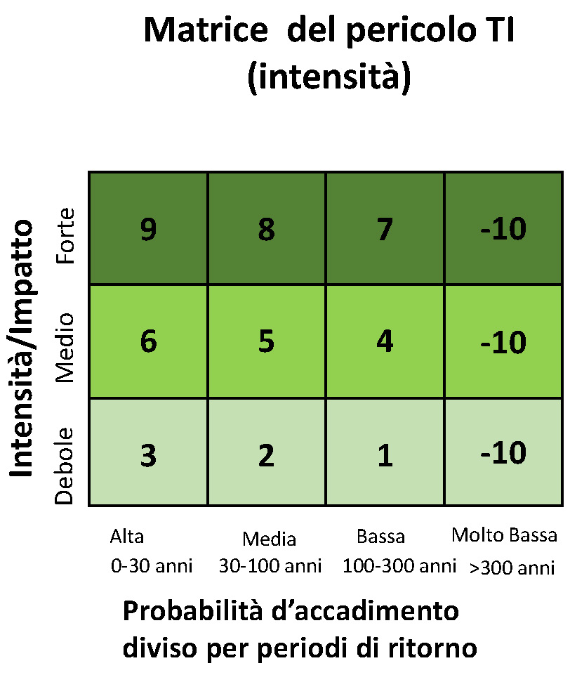
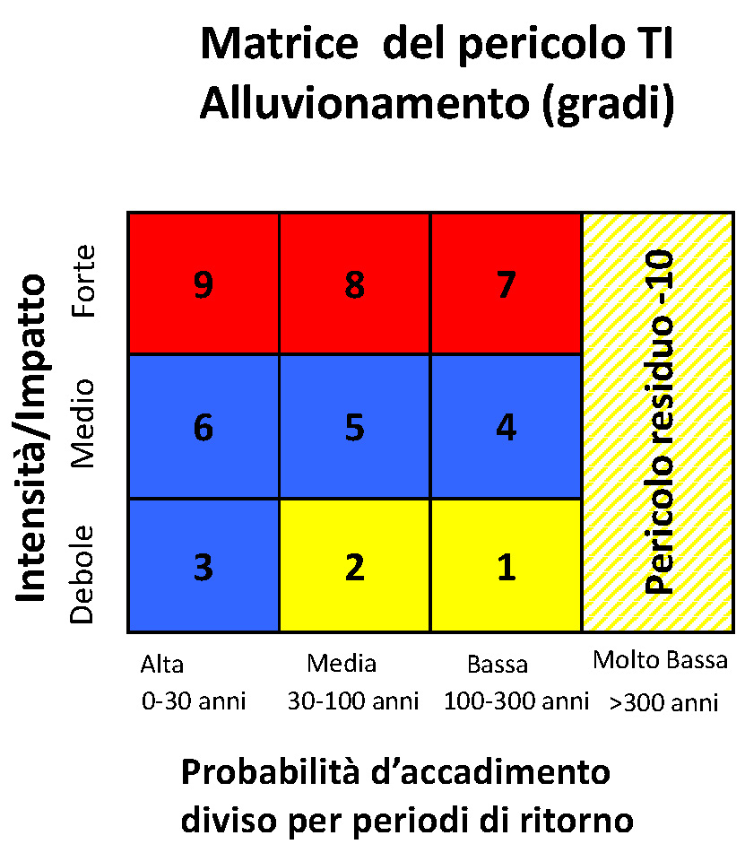
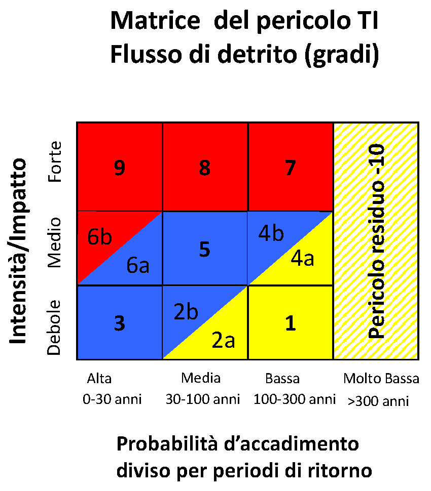
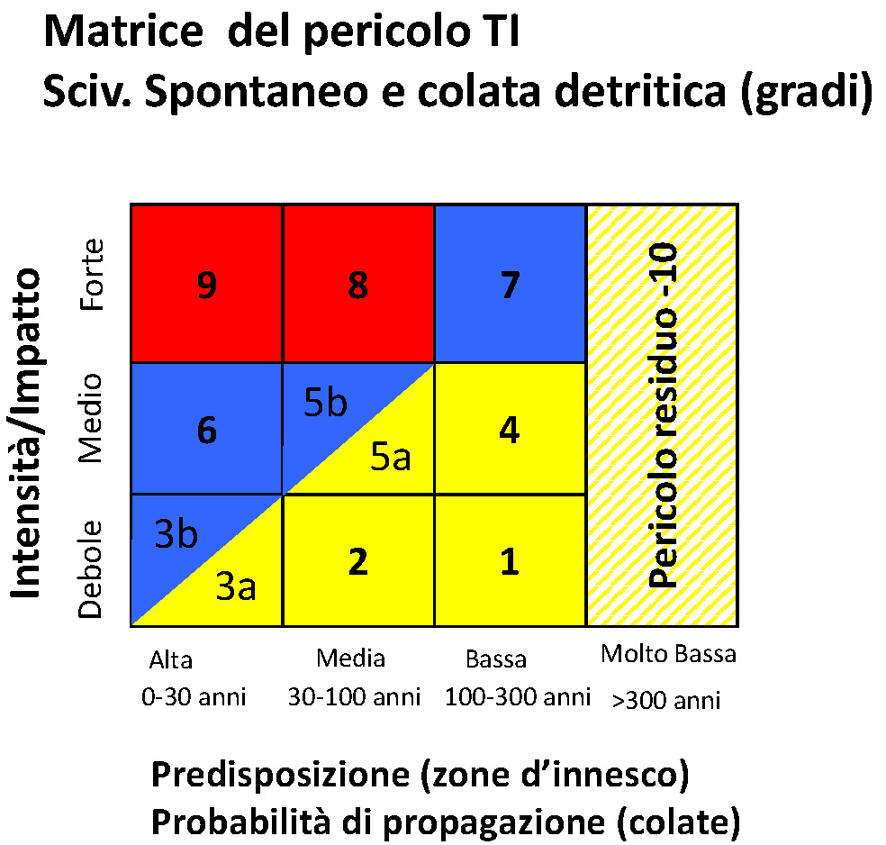
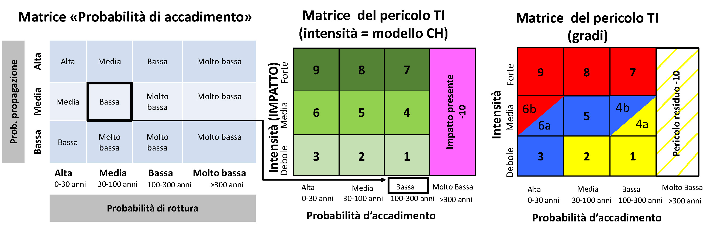
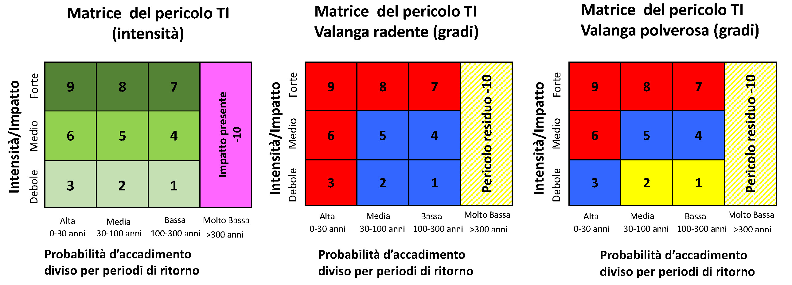

Reference
Versioni
| Versione | Data pubblicazione | Descrizione |
|---|---|---|
| 1.4.0 | 07.01.2025 | Risolto bug soltanto le zone con pericolo elevato vengono sottratte |
| 1.3.5 | 15.09.2023 | Aggiornati i gruppi/layer predefiniti per "Mappe base", "Dati base WMS e WFS" |
| 1.2.5 | 16.06.2023 | Migliora simbologia |
| 1.2.4 | 16.06.2023 | Utilizza algoritmo fondi per area |
| 1.2.3 | 07.06.2023 | Miglioramento simbologia |
| 1.2.2 | 31.05.2023 | Aggiornamento mappe di base e dati di base |
| 1.2.1 | 31.05.2023 | Aggiornamento mappe di base e dati di base |
| 1.2.0 | 25.05.2023 | Calcola propagazione per fonte di processo |
| 1.1.7 | 23.05.2023 | Correzione errore A->B e miglioramento stili e documentazione |
| 1.1.6 | 16.05.2023 | Migliora gli stili dei layer |
| 1.1.5 | 16.05.2023 | Correzione e miglioramenti degli algoritmi |
| 1.1.4 | 10.05.2023 | Migliora gli stili dei layer |
| 1.1.3 | 05.05.2023 | Crea layer filtrati per layer intensità generato da algoritmo propagazione |
| 1.1.2 | 05.05.2023 | Migliora algoritmo propagazione e migliora gestione errori |
| 1.1.1 | 03.05.2023 | Migliora la gestione delle variabili dei layer |
| 1.1.0 | 03.05.2023 | Aggiungi layer filtrati per processo caduta sassi |
| 1.0.9 | 28.04.2023 | Migliora le icone |
| 1.0.8 | 28.04.2023 | Migliora i vincoli nei form |
| 1.0.7 | 27.04.2023 | Creazione separata layer propagazione |
| 1.0.6 | 21.04.2023 | Permetti gli apici nel nome delle fonti di processo anche per algo no_impact |
| 1.0.5 | 21.04.2023 | Permetti gli apici nel nome delle fonti di processo |
| 1.0.4 | 20.04.2023 | Miglioramento degli stili dei layer |
| 1.0.3 | 18.04.2023 | Utilizza il codice del valore della matrice (es. 1003) invece del valore reale |
| 1.0.2 | 05.04.2023 | Miglioramento algoritmo calcolo zone di pericolo |
| 1.0.1 | 04.04.2023 | Miglioramento compatibilità stili e algoritmi in QGIS 3.16 |
| 1.0.0 | 31.03.2023 | Prima release pubblica |
Matrici del pericolo utilizzate
Matrice intensità

Alluvionamento

Flusso di detriti

Scivolamento spontaneo e colata detritica di versante

Caduta sassi/blocchi/massi

Valanga radente e valanga polverosa

Codici domini
Probabilità di evento
| Codice | Descrizione |
|---|---|
| 1000 | Molto bassa |
| 1001 | Bassa |
| 1002 | Media |
| 1003 | Alta |
Intensità
| Codice | Descrizione |
|---|---|
| 1000 | Nessun impatto |
| 1001 | Impatto presente |
| 1002 | Debole |
| 1003 | Medio |
| 1004 | Forte |
Pericolo
| Codice | Descrizione |
|---|---|
| 1000 | Non in pericolo |
| 1001 | Pericolo residuo |
| 1002 | Basso |
| 1003 | Medio |
| 1004 | Elevato |
Tipo di processo
| Codice | Descrizione |
|---|---|
| 1110 | Alluvionamento corso d'acqua minore |
| 1120 | Alluvionamento corso d'acqua principale |
| 1200 | Flusso detrito |
| 1400 | Ruscellamento superficiale |
| 2001 | Scivolamento spontaneo |
| 2002 | Colata detritica di versante |
| 3000 | Caduta sassi o blocchi |
| 4100 | Valanga radente |
| 4200 | Valanga polverosa |
Variabili dei layer
I layer generati dal plugin hanno le seguenti variabili definite:
| Variabile | Descrizione |
|---|---|
| pzp_layer | tipo di layer (es. intensity) |
| pzp_process | codice del processo del layer (es. 1110) |